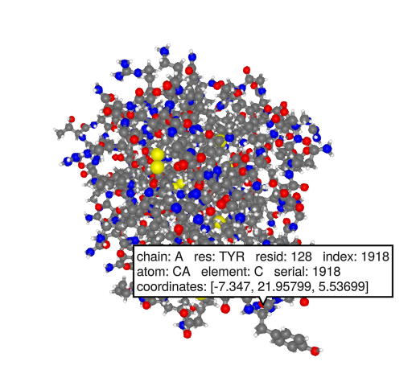

ProtoSyn Protein Mutation
In this demo we can use ProtoSyn to mutate amino acids. Different rotamers can be selected for the mutated residue. To use ProtoSyn you currently have to use a workaround.
Load BioMakie and ProtoSyn
Download the protosyn source code from the src directory of BioMakie and include it. This should install a few packages (SplitApplyCombine, Colors, Meshes, GeometryBasics, OrderedCollections, Distances) and then import ProtoSyn.
using BioMakie
using GLMakie
BioMakie.getprotosyn()
include("protosyn.jl")Prepare the structure
To simplify things, we will load a structure with BioStructures and save chain "A" as a PDB file. Then we will load the PDB file with ProtoSyn.
using BioStructures
struc = retrievepdb("2vb1")
chn = collectresidues(struc[1]["A"], standardselector)
writepdb("2vb1x.pdb", chn)
pose = ProtoSyn.Peptides.load("2vb1x.pdb"; bonds_by_distance=true) |> ObservableGet plotting data for the Pose and plot it
pdata = plottingdata(pose)
fig = Figure()
_plotstruc!(fig, pdata)
Prepare the structure
We can use diagnose to get an idea of what is missing and of inconsistencies in the structure.
ProtoSyn.Peptides.diagnose(pose[])We have several issues, including charges, naming, and caps, which are the terminal hydrogens. We can use the following functions to address these issues. First we load the library of amino acids, to get the Peptide/protein-specific data, instead of the default generic data.
res_lib = ProtoSyn.load_grammar_from_file(ProtoSyn.resource_dir*"/Peptides/grammars.yml", "default")
ProtoSyn.Peptides.cap!(pose[])
ProtoSyn.Peptides.assign_default_atom_names!(pose[])
ProtoSyn.sort_atoms_by_graph!(pose[])
ProtoSyn.Peptides.Calculators.Electrostatics.assign_default_charges!(pose[], res_lib)
ProtoSyn.Peptides.diagnose(pose[])Now the issues should say OK, except for the atom-level graph. We can ignore this for now. This fixpose! function below may be convenient for syncing and correcting the structure after making changes. Using pose[] = pose[] can force Makie to update the pose/figure.
function fixpose!(pose::Observable; res_lib=ProtoSyn.load_grammar_from_file(ProtoSyn.resource_dir*"/Peptides/grammars.yml", "default"))
ProtoSyn.Peptides.cap!(pose[])
ProtoSyn.Peptides.assign_default_atom_names!(pose[])
ProtoSyn.sort_atoms_by_graph!(pose[])
ProtoSyn.Calculators.Electrostatics.assign_default_charges!(pose[],res_lib)
ProtoSyn.Peptides.sync!(pose[])
pose[] = pose[]
endMutate the structure
Get information about a residue. In this example we will use residue 128 because it is easy to find on the structure. The long side chain of this arginine extends outward the furthest.
pose[].graph[1][128]Next lets try mutating it to tyrosine. We can use the mutate! function to do this. Combine it with fixpose! to get the updated structure. You should see the side chain change into the phenol ring of tyrosine.
ProtoSyn.Peptides.mutate!(pose[], pose[].graph[1][128], res_lib, seq"Y")
fixpose!(pose)
To choose different rotamers/orientations, we can use the rotamer library. ProtoSyn provides a stack of the most likely rotamers based on the dihedral angles of the residue.
rot_lib = ProtoSyn.Peptides.load_dunbrack()
phi = ProtoSyn.getdihedral(pose[].state, ProtoSyn.Peptides.phi(pose[].graph[1][128]))
psi = ProtoSyn.getdihedral(pose[].state, ProtoSyn.Peptides.psi(pose[].graph[1][128]))
stack = rot_lib["TYR"][phi, psi]
ProtoSyn.Peptides.apply!(pose[].state, stack[3], pose[].graph[1][128])
fixpose!(pose)
This page was generated using Literate.jl.